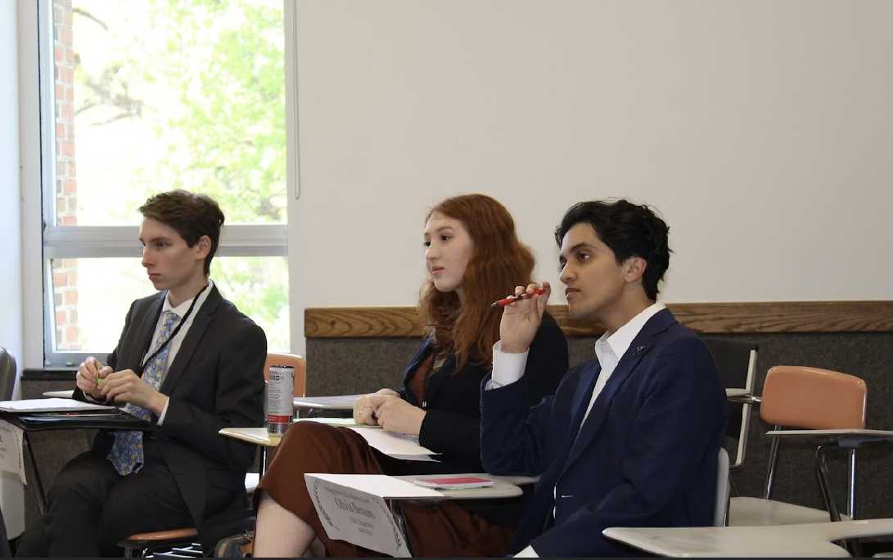

My Model UN Journey

When I first walked into NC State Model UN’s first club meeting as a freshman, I was met with a stark reality. Confronted with a nearly empty room and disorganized leadership without an agenda, I saw a blank canvas–a chance to rebuild this club and shape it into the community I had hoped to find.
Recognizing the need for proactive leadership, I stepped up that year and became the head delegate of the travel team. It was unconventional for a freshman to hold this position, but my experience and passion belied my freshman status.

At the end of my freshman year was my chance to make a significant change. I ran for president, sharing my vision of a partnership with UNC-Chapel Hill’s Carolina International Relations Association (CIRA), a well-established organization with abundant resources. Presenting this plan caught people’s attention, and I won the election.
Diving headfirst into my presidency, I initiated talks with CIRA. Negotiations were complex, as the values I deemed important did not always align with theirs. There were moments of doubt and setbacks, but persistence paid off. A mutually beneficial partnership provided our organization with the resources and opportunities to offer much more to our members.

Our newly formed partnership opened doors for our members to attend prestigious conferences that same year in Chicago and Williamsburg. Through the travel team, I witnessed a remarkable transformation. Shared experiences forged a strong sense of community within our organization, and my leadership during these trips fostered relationships that will persist for years to come.
Fast forward to today, and our partnership with CIRA is thriving. We have expanded our networks, made resources accessible, and brought amazing experiences to students from both universities. Personally, being at the forefront of this evolution has been extremely rewarding. Seeing my vision come to life has earned me the respect of my peers, and witnessing the genuine impact of my efforts has given me first-hand experience of the importance of good leadership.